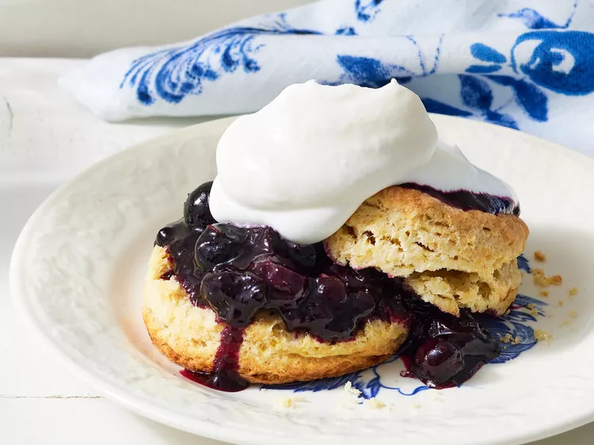

Blueberry Shortcake
Description
Blueberries sandwiched between homemade shortcake topped with cream - blueberry shortcake is the perfect summer dessert. (Source: allrecipes.com)
Ingredients
Shortcakes
- 3/4 cup heavy cream
- 1 large egg
- 1 teaspoon vanilla extract
- 1 teaspoon lemon zest
- 2 cups flour
- 2 tablespoons white sugar
- 1 tablespoon baking powder
- 1/4 teaspoon salt
- 6 tablespoons unsalted butter
Blueberry Topper
- 3 cups frozen blueberries
- 1/2 cup white sugar
- 1 tablespoon lemon juice
Whipped Cream (Optional)
- 1/2 cup heavy cream
- 2 tablespoons powdered sugar
Steps
- Step 1: Gather your ingredients. Preheat the oven to 400 degrees F (200 degrees C). Line a baking sheet with parchment paper or a silicone baking mat.
- Step 2: In a small bowl whisk together cream, egg, vanilla, and lemon zest, if desired; set aside.
- Step 3: Combine flour, baking powder, sugar, and salt in a large bowl.
- Step 4: Cut in butter with a pastry blender until the mixture is the consistency of coarse crumbs.
- Step 5: Gently stir in cream mixture, just until moistened.
- Step 6: Roll on a lightly floured surface to 3/4-inch thick.
- Step 7: Cut biscuits using a 2 1/2- to 3-inch round cutter or cut the dough as desired.
- Step 8: Place biscuits on the prepared baking sheet. Bake until golden brown, 15 minutes.
- Step 9: Cool biscuits for 5 minutes on the baking sheet. Cool completely on a wire rack.
- Step 10: Combine 2 cups blueberries, sugar, and lemon juice in a medium saucepan.
- Step 11: Bring mixture to a simmer and cook until thickened on medium-low, about 15 minutes, stirring regularly.
- Step 12: Stir in remaining 1 cup blueberries. Cool for about 15 minutes.
- Step 13: Add heavy whipping cream and powdered sugar to a medium bowl.
- Step 14: Beat until medium peaks form, 3 to 4 minutes.
- Step 15: Split shortcakes in half horizontally.
- Step 16: Spoon half of the blueberry compote on the bottom halves of the shortcakes.
- Step 17: Stack the shortcake tops on top. Top with remaining blueberry compote and whipped cream, if using.
return home